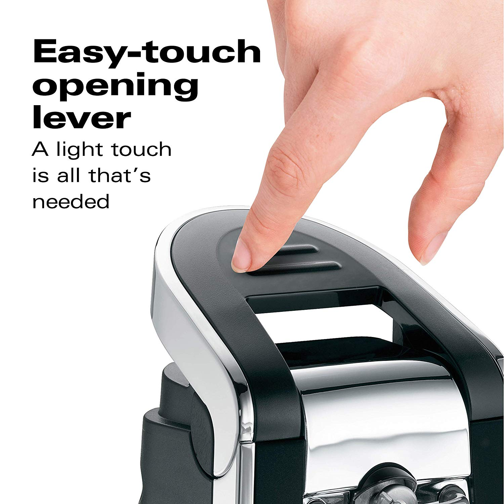

Our facility includes smooth Touch design Unlike most can openers Our Features are.
- No more sharp lid edges
- Opens pop-top & regular cans with easy-touch opening lever
- Sleek matte chrome & black design
- Includes convenient scissors
- Includes a 5 year limited warranty from Dhuka Can Openers

Electric can openers might seem like a luxury item when compared with, say, a knife, but for some home cooks an electric can opener is actually vitally important. Consider customers who suffer from carpal tunnel syndrome, arthritis, or have other types of nerve damage – an electric can opener can be a useful tool that allows them to have more independence in the kitchen. Add to that some of the regular features that newer models come with, like a built-in knife sharpener, bottle opener, and pop-top opener, and it is easy to see the appeal of adding one to a busy home kitchen.
Besides, you most likely will want your can opener to have the following qualities:
1) well made, so it does not have a flimsy feel. If the opener is handheld it should be comfortable to hold, if it is freestanding electric it should not tip over from the weight of the can. It also should be able to grip cans securely;
2) rust resistant it’s best when the cutting mechanism is made of stainless steel. You don’t want to end up with rust particles in your food, do you?;
3) easy to maintain preferably a dishwasher-safe manual can opener or dishwasher-safe removable cutting unit for an electric one;